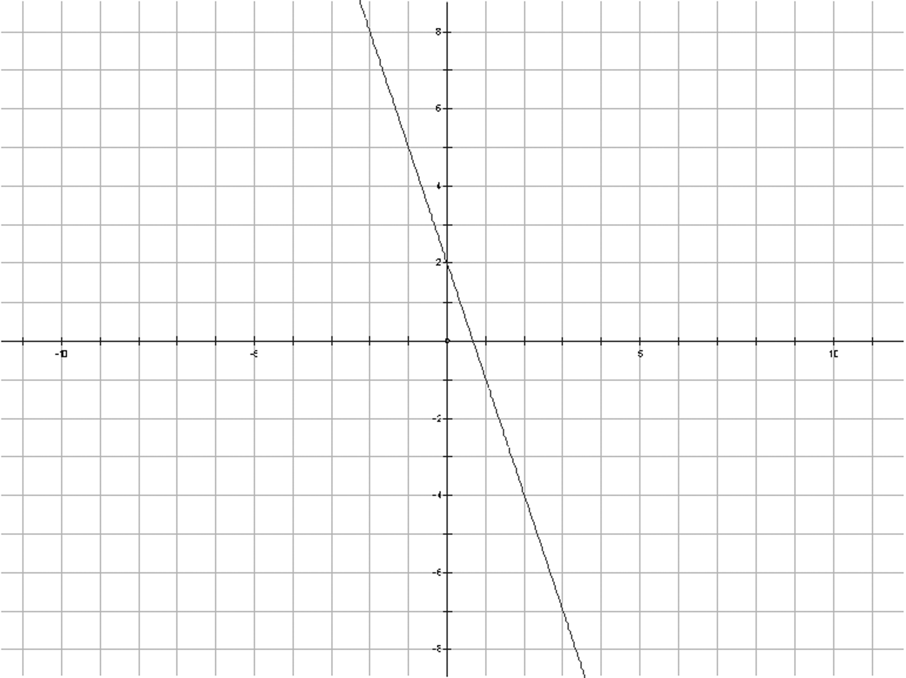
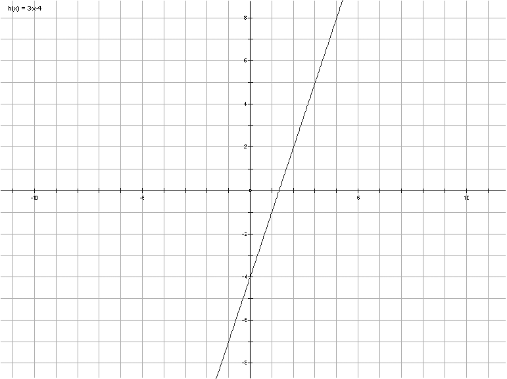
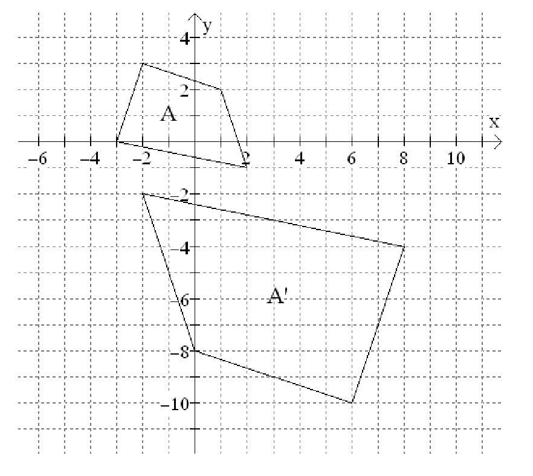

{% raw %}

<article>
  <h1>Summary and Review</h1>

  <section class="problems">
    <div class="problem">
      <p>Do the indicated operation and write your final answer as
      a single fraction. Do not use the fraction capabilities of
      your calculator.</p>

      <p class="problem-part">$\frac{3}{4} + \frac{5}{9}$</p>

      <p class="problem-part">$\frac{5}{7} - \frac{5}{{14}}$</p>

      <p class="problem-part">$\frac{6}{12}\cdot\frac{-5}{12}$ </p>
      <p class="problem-part">$\frac{{11}}{3} \div \frac{5}{6}$</p>

      <p class="problem-part">$\frac{{\left( {{\textstyle{3 \over
      4}}} \right)}}{{\left( {{\textstyle{8 \over 5}}}
      \right)}}$</p>
    </div>

    <div class="problem">
      <p>Solve each equation below for the
      indicated unknown.</p>

      <p class="problem-part">For $x$: $3x - 8 = 11$</p>

      <p class="problem-part">For $y$: $5y + 7 = 3y - 17$</p>

      <p class="problem-part">For $a$: $\frac{a}{6} + 3 =
      11$</p>

      <p class="problem-part">For $b$: $\frac{{b + 3}}{6} = b -
      2$</p>

      <p class="problem-part">For $y$: $x = -3y + 5$</p>
    </div>

    <div class="problem">
      <p>Solve each of the following equations or inequalities. Do
      not approximate and show your work.</p>

      <p class="problem-part">$5y - 12 = - 4y + 30$</p>

      <p class="problem-part">$3\left( {3x - 5} \right) + 4\left(
      {1 - 2x} \right) = 10$</p>

      <p class="problem-part">$\frac{w}{5} + 5 = 2w$</p>

      <p class="problem-part">$2\left( {a - 5} \right) \le 6a +
      20$</p>
    </div>

    <div class="problem">
      <p>Jillian is a huge fan of Brazilian cheese; so much so, in
      fact, that she joins a Brazilian cheese eating club where she
      can get a
      discount on buying it. Every time she
      orders it costs 36 cents an ounce plus a
      2 dollar shipping charge.</p>

      <p class="problem-part">If she bought 5 ounces, how much
      will she have to pay?</p>

      <p class="problem-part">What about if she bought 3.5
      ounces? (Assume that fractions of an ounce cost
      proportionally — e.g. ¼ of an ounce costs ¼ of 36 cents = 9 cents)</p>

      <p class="problem-part">If she bought \$5.24, how many
      ounces did she buy?</p>

      <p class="problem-part">If she bought \$7.48, how many
      ounces did she buy?</p>

      <p class="problem-part">Write an equation for $P$, the
      price Jillian paid, in terms of C, the amount of cheese Jillian
      ordered, in ounces.</p>

      <p class="problem-part">Write an equation for $C$, the amount
      of cheese Jillian ordered, in terms of $P$, the price Jillian
      paid.</p>
    </div>

    <div class="problem">
      <p>Consider the following graph.</p>
      <figure>
        
      </figure>

      <p class="problem-part">In the graph above, each small square
      represents one unit. What is the $y$-intercept? What is the
      slope?</p>

      <p class="problem-part">Use the graph and the slope to
      determine what $y$ is when $x$ is 2,
      and what $x$ is when $y$ is -5.5.</p>

      <p class="problem-part">Estimate, using the graph only, what
      $y$ is when $x$ is 2.7. Then figure out another method where you
      can
      determine the answer exactly.</p>

      <p class="problem-part">Estimate, using the graph only, what
      $x$ is when $y$ is 4.2. Then figure
      out another method where you can determine the answer
      exactly.</p>

      <p class="problem-part">Jasper thinks an equation of this
      line is $21x + 7y = 14$ . Is he right?</p>
    </div>

    <div class="problem">
      <p>The more students that visit the school store, the fewer
      super-cool rainbow pens they have. Although not every student
      that visits the store buys a pen, it is still true that the
      relationship between students and pens remaining is linear.
      We are told that after stocking the pens for 8 days, the
      store has 527 pens remaining, and that after 20 days, they
      have 323 pens.</p>

      <p class="problem-part">How many pens are there left after
      31 days?</p>

      <p class="problem-part">Determine the $x$-intercept and
      $y$-intercept of this line, and interpret their meaning in
      the context of this problem.</p>

      <p class="problem-part">What is the equation of the
      line?</p>
    </div>

    <div class="problem">
      <p>The point $( - 3, - 4)$ is on a line with a slope of
      $\frac{{ - 7}}{5}$ .</p>

      <p class="problem-part">What is the equation of the
      line?</p>

      <p class="problem-part">What is the value of y, when $x =
      12$? When $x = 17.2$?</p>

      <p class="problem-part">What is the value of x, when
      $y = 24$? When $y = -16.7$?</p>

      <p class="problem-part">Is $(9.2,-21)$ on the graph?
      Explain.</p>

      <p class="problem-part">Write the equation of the line in
      the form $Ax + By = C$ , where $A$, $B$, and $C$ are integers.</p>

      <p class="problem-part">Graph the equation.</p>
    </div>

    <div class="problem">
      <p>Looking at two lines, you see that (5,2) is on both
      lines.</p>

      <p class="problem-part">The $y$-intercept of the first line
      is $-8$. What is the equation of the line?</p>

      <p class="problem-part">The slope of the second line is $-6$
      and goes through $(p,-12)$. What is $p$?</p>
    </div>

    <div class="problem">
      <p>State the equations of 2 lines that go through $(-7,13)$,
      one of which does not have a $y$-intercept, and the other
      which does not have an $x$-intercept.</p>
    </div>

    <div class="problem">
      <p>The slope from $(Q,2Q)$ to $(4,7)$ is 3.
      Find $Q$.</p>
    </div>

    <div class="problem">
      <p>Solve the following:</p>

      <p class="problem-part">$4(x - 3) - 7 = - 2(6 - x) + 5$</p>

      <p class="problem-part">$2x - 5(3 - x) &gt; 17 - (3 - x) -
      2(x + 6)$</p>

      <p class="problem-part">$\frac{3}{7}x - \frac{2}{5} &gt;
      \frac{4}{9} - \frac{8}{7}x$</p>
    </div>

    <div class="problem">
      <p>Graph $5x - 4y \le 10$ . (Try using the
      $x$ and $y$ intercepts as the two points
      you use to draw the line — it’s quicker!)
      When $x = - 3$ , what values of y satisfy the inequality?</p>
    </div>

    <div class="problem">
      <p>Graph $ - 2x + 16 = 24$ in 1 dimension AND in 2
      dimensions.</p>
    </div>

    <div class="problem">
      <p>If two linear inequalities are graphed on the same axes,
      and the lines that define them are NOT parallel, is it still
      possible that there are points in the plane that
      satisfy NEITHER of the inequalities?
      Give an example.</p>
    </div>

    <div class="problem">
      <p>Imagine that in the graph below the region to the LEFT of
      the line is shaded, but that the line itself is dotted. Write
      an inequality to describe this region.</p>
      <figure>
        
      </figure>
    </div>


    <div class="problem">
      <p>Let $A = \left( { - 1,7} \right)$ and $B = \left( {4,29}
      \right)$ .</p>

      <p class="problem-part">Determine an equation for the
      straight line passing through $A$
      and $B$.</p>

      <p class="problem-part">What are the coordinates of the
      midpoint of the line segment $AB$?</p>

      <p class="problem-part">There is a line that is
      perpendicular to the line segment $AB$ and that goes through
      the midpoint of line segment
      $AB$. Determine the coordinates of a point on this line other
      than the point you found in Part B.</p>

      <p class="problem-part">Call the point you found in Part C
      point D. If you connect points
      $A$, $B$, and $D$ with straight line
      segments, you will get a triangle.
      Is this triangle isosceles? How do
      you know?</p>
    </div>

    <div class="problem">
      <p>List 5 solutions to the equation $4x + 6y = 24$ .</p>
    </div>

    <div class="problem">
      <p>List 5 solutions to the inequality $4x + 6y \ge 24$ r .
      None of these solutions can be a solution you found in
      the
      previous problem.</p>
    </div>

    <div class="problem">
      <p>Find a solution to $4x + 6y \ge 24$ r that is not a
      solution to $4x + 6y &gt; 24$ . Now, show all of the
      solutions to $4x + 6y \ge 24$ that are not solutions to $4x
      + 6y &gt; 24$ .</p>
    </div>

    <div class="problem">
      <p>Let $A = \left( {1,4} \right)$, $B = \left( {12,3} \right)$, and $C = \left( {11, -
      8} \right)$.</p>

      <p class="problem-part">Is the triangle determined by the
      points $A$, $B$, and $C$ a right triangle? Use mathematics to
      justify your claim.</p>

      <p class="problem-part">Is the triangle determined by
      points $A$, $B$, and $C$ an isosceles triangle? Recall that an
      isosceles triangle is a triangle that has two equal sides.
      Use mathematics to justify your claim.</p>

      <p class="problem-part">Write an equation for the line
      segment that runs from point $B$
      to the midpoint of side $AC$.</p>

      <p class="problem-part">What special relationship(s) does
      the line segment you determined in Part C have to side $AC$?
      Use mathematics to justify your claim(s).</p>
    </div>

    <div class="problem">
      <p>Let $P = \left( {7,13} \right)$ and $Q = \left( { - 8,45}
      \right)$.</p>

      <p class="problem-part">Find $b$ if is on the straight line
      containing $P$ and $Q$.</p>

      <p class="problem-part">Find $c$ if $P$ is the midpoint of the
      line segment determined by $\left( {22,c} \right)$ and $Q$.</p>
    </div>

    <div class="problem">
      <p>List four solutions to $-3x + 4y = 12$.</p>
    </div>

    <div class="problem">
      <p>Show all the solutions to the equation given in the
      previous problem.</p>
    </div>

    <div class="problem">
      <p>List four solutions to $-3x + 4y \gt 12$.</p>
    </div>

    <div class="problem">
      <p>Show all the solutions to the inequality given in the
      previous problem.</p>
    </div>

    <div class="problem">
      <p>Show all of the solutions to $2x - 5y \le 20$.</p>
    </div>

    <div class="problem">
      <p>The following four lines enclose a certain shape. Use
      algebra to find the vertices of the shape, then prove that
      the shape is what you think it is.</p>
      <figure>
        <ul>
          <li>$3x - 4y = - 8$</li>
          <li>$x = 0$</li>
          <li>$3x - 4y = 12$</li>
          <li>$x = 4$</li>
        </ul>
      </figure>

    </div>


    <div class="problem">
      <p>The following three lines enclose a triangle.
      Use algebra to find the vertices of the
      triangle, then find the area of the triangle.</p>
      <figure>
        <ul>
          <li>$y = - 1$</li>
          <li>$y - 2x = 3$</li>
          <li>$x + y = 6$</li>
        </ul>
      </figure>
    </div>

    <div class="problem">
      <p>Prove that two medians of an isosceles triangle are the
      same length. (Choose
      coordinates wisely.)</p>
    </div>

    <div class="problem">
      <p>Do some tests to decide whether the quadrilateral with
      vertices $(32,50)$, $(75,71)$, $(96,30)$, and $(53,7)$ is a square.
      If it is a square, prove it. If it’s not, change one
      of the vertices so that it is now a square.</p>
    </div>

    <div class="problem">
      <p>Given points $P(-1,-1)$, $Q(2,3)$, $A(1,2)$, and $B(7,k)$.</p>

      <p class="problem-part">Choose a value of $k$ that makes line
      AB parallel to line $PQ$.</p>

      <p class="problem-part">Choose another value of $k$ that
      would make line $AB$ perpendicular
      to line $PQ$.</p>
    </div>

    <div class="problem">
      <p>An <em class="vocab">altitude</em> of a triangle is a line segment drawn from a
      vertex of a triangle so that it makes a 90-degree angle with
      the opposite side. (An altitude is sometimes called the
      <em class="vocab">height</em> of a triangle.) Since each triangle has three
      vertices, each triangle also has three altitudes.</p>

      <p class="problem-part">Find equations for all three
      altitudes of the triangle with vertices $A(-2,9)$, $B(1,1)$, and
      $C(4,7)$.</p>

      <p class="problem-part">Describe a strategy for
      algebraically showing that the three altitudes of this
      triangle meet in one point.</p>

      <p class="problem-part">Carry out your strategy. At what
      point do the three altitudes meet?</p>
    </div>

    <div class="problem">
      <p>Let triangle $XYZ$ have its vertices
      (corners) at $X = \left( {1,2} \right)$,
      Y = \left( {4,4} \right), and
      Z = \left( {2,7} \right).</p>

      <p class="problem-part">Sketch triangle $XYZ$ on a piece of
      graph paper. Scale the $x$-axis from $-5$ to $15$ and the
      $y$-axis from $-5$ to $25$.</p>

      <p class="problem-part">Suppose you translate triangle
      $XYZ$ 4 units to the right and 3 units down. What will be the
      new coordinates
      of Y?</p>

      <p class="problem-part">Suppose you translate the triangle
      $XYZ$ $h$ units to the right and $k$
      units down. What will be the new coordinates of $Z$?</p>

      <p class="problem-part">Suppose you used the formula on $(3x, 3y)$
      each point of triangle $XYZ$ in order to get a new triangle.
      Draw this new triangle on the graph in Part a.</p>

      <p class="problem-part">How do the two triangles relate to
      each other? Use mathematics to
      justify your claim.</p>

      <p class="problem-part">Use a straight edge the draw a line
      through $X$ and its corresponding point on the larger triangle
      (i.e.,
      on the “$X$” of the new triangle). Extend this line well beyond
      both
      of these points. Draw this line as carefully as you can.</p>

      <p class="problem-part">Repeat Part f for points $Y$ and $Z$,
      and their respective corresponding points on the new
      triangle.</p>

      <p class="problem-part">The three lines you drew in Parts f
      and g appear to have a common intersection point. Where is
      this? Label this point $P$.</p>

      <p class="problem-part">Calculate the distance from $P$ to $X$.
      Now calculate the distance from $P$ to the point on the bigger
      triangle that corresponds to $X$. One distance should be longer
      than the other. By how many times is it longer? Two? Three?
      Four? Three and a half? Hmmm …</p>
    </div>

    <div class="problem">
      <p>Consider the points $A(-2, 5)$ and $B(8, 1)$.</p>

      <p class="problem-part">What is the equation of the
      line
      connecting these points?</p>

      <p class="problem-part">What is the midpoint of the
      line
      segment AB?</p>

      <p class="problem-part">What is the slope of a line that is
      perpendicular to AB?</p>

      <p class="problem-part">What is the equation of the line
      that is perpendicular to AB and that goes through the
      midpoint of AB? What quadrants does it go through?</p>

      <p class="problem-part">What is the distance between A
      and B?</p>

      <p class="problem-part">Triangle ABC is a right
      triangle.
      Find coordinates for point C (there
      is more than one answer to this
      question).</p>
    </div>

    <div class="problem">
      <p>Line Q is parallel to $y = - 3x - 7.8$ . Line Q contains
      the points $(4,18)$, $(6,a)$, and $(b,10)$. Find a and b.</p>
    </div>

    <div class="problem">
      <p>2 bugs start at the point (3, 5). One bug travels with a
      slope of -2.5, and another takes a perpendicular path.
      Assuming both bugs eventually cross the $x$-axis (let’s call
      the 2 points of crossing A and B), what is the midpoint of
      AB?</p>
    </div>

    <div class="problem">
      <p>C(9, 14) is the midpoint of AB.
      A is (-7, -13).</p>

      <p class="problem-part">What are the coordinates of B?</p>

      <p class="problem-part">D is twice as far away from A as B
      is, but is closer to A than B. What are the coordinates of D
      (assume D is on the same line as A and B)?</p>

      <p class="problem-part">The point (x, 0) is on the line
      that has -3 times the slope of AB and goes through D. Find
      x.</p>
    </div>

    <div class="problem">
      <p>For each of the following, you are given the coordinates
      of a 3 or 4 sided polygon. Determine as precisely and
      specifically
      as possible the nature of the polygon. Support all your
      assertions with calculations.</p>

      <p class="problem-part">(-8,5), (-4,2), (2,11), (-2,14)</p>

      <p class="problem-part">(4,3), (8,-5), (12,7)</p>

      <p class="problem-part">(0, 0), (5, 5), (15, 5), (7, -1)</p>
    </div>

    <div class="problem">
      <p>The points (2, 1) and (4, 7) are two
      vertices of a quadrilateral.</p>

      <p class="problem-part">Find two other vertices such that
      the quadrilateral formed by the 4 points is a
      parallelogram.</p>

      <p class="problem-part">Alternatively, find two other
      vertices such that the quadrilateral formed by the 4 points
      is a rhombus.</p>

      <figure>
        
      </figure>

    </div>


    <div class="problem">
      <p>Zimbo made the following claim: “In any triangle, if you
      draw the segment connecting the midpoints of two sides of a
      triangle, then the length of that segment is half the length
      of the third side of the triangle”. Create your own triangle
      on the coordinate axes and support or refute Zimbo’s
      claim.</p>
    </div>

    <div class="problem">
      <p>Quadrilateral PROM has vertices P (1, 3), R (4, 7), O (8,
      4) and M (9,-3).

      Alice claims that PROM is just an ordinary quadrilateral;
      John claims that it is a trapezoid; Trey claims that it is a
      trapezoid with a right angle, while Billy claims that it is a
      trapezoid with two right angles. Take a position and justify
      it.</p>
    </div>

    <div class="problem">
      <p>For each of the following say whether it be true or
      false.</p>

      <p class="problem-part">Triangle PQR has a right angle at
      Q. If PR = 17 cm and QR = 15 cm, then PQ = 8 cm.</p>

      <p class="problem-part">If a line has equation, $y = a + bx$, then its slope is $b$.</p>

      <p class="problem-part">The slope of a line joining the
      points $(a, b)$ and $(c, d)$ is $\frac{(b – d)}{(a – c)}$.</p>

      <p class="problem-part">If a line has equation, $y = 2 - 3x$, then any line perpendicular to it will have slope
      1/3.</p>

      <p class="problem-part">The distance between the points
      $(1, -2)$ and $(16, -10)$ is 17.</p>

      <p class="problem-part">The coordinates of the midpoint of the line segment joining the points $(2a, 3b)$ and $(10a, -7b)$ is $(6a, -2b)$.</p>

      <p class="problem-part">A square is a rectangle.</p>

      <p class="problem-part">A right triangle may be
      equilateral.</p>
    </div>

    <div class="problem">
      <p>On graph paper, draw triangle $ABC$
      ($A(-3, 1)$, $B(1, 1)$, $C(1, 4)$) and then (by drawing on graph
      paper and by making calculations) give the coordinates of
      transformed triangle $A'B'C'$ after you have:</p>

      <p class="problem-part">Translated triangle ABC 1 unit to
      the right and down 2 units, and then reflected it across the
      $x$-axis.</p>

      <p class="problem-part">Reflected triangle ABC across the
      $y$-axis, and then rotated it 90 degrees counterclockwise
      around the origin.</p>

      <p class="problem-part">Translated triangle ABC 4 units
      left and 5 units down, reflected it across the $x$-axis, and
      then rotated it 180 degrees around the origin.</p>

      <p class="problem-part">Dilated triangle ABC by a factor of
      2, centered at the origin.</p>

      <p class="problem-part">Contract triangle ABC by a factor
      of $\frac{3}{4}$ , centered at the origin.</p>

      <p class="problem-part">Dilated triangle ABC by a factor of
      2, centered at (-1, -2).</p>

      <p class="problem-part">Reflected triangle ABC across
      the
      $x$-axis, dilated it by a factor of 3
      centered at (3, 4), and then rotated it 90 degrees clockwise
      around (3, 4).</p>
    </div>

    <div class="problem">
      <p>A flag is drawn below which you should use to answer the
      following questions.
      </p>

      <figure>
            
      </figure>
      <p class="problem-part">Sketch the resulting shape if the
      flag is transformed by translating it 2 units left, then
      rotating it 90 degrees counterclockwise around the origin, and,
      finally, dilating it by a factor of 2, where the center of the
      dilation is at $\left( {0,0} \right)$ .</p>

      <p class="problem-part">Sketch the resulting shape if the
      flag is transformed by reflecting it across the y-axis, then
      contracting it by a factor of $\frac{1}{2}$, where the center of the dilation is $\left( {0,0}
      \right)$ .</p>

      <p class="problem-part">Sketch the resulting shape if the
      flag is transformed by dilating it by a
      factor of 1.5, where the center of the dilation is $\left( { -
      4,3} \right)$ .</p>

      <p class="problem-part">The top left corner of the flag has
      coordinates $\left( { - 3,4} \right)$ . What should be the
      exact coordinates of the top left corner of the flag you drew
      in Part (c)? Prove that your assertion is true.</p>
    </div>

    <div class="problem">
      <p>We know that if we translate an object two units to the
      right and then three units down the resulting image will be
      exactly the same as the result of translating the object
      three units down first then two units right. In other words,
      we are confident that horizontal and vertical translations
      are commutative (the order in which things are done doesn’t
      matter). Are horizontal translations commutative with any
      other transformations that we have studied? For instance, are
      horizontal translations and dilations centered at the origin
      commutative? Investigate this and other possible combinations
      and determine which transformations, if any, are commutative
      with horizontal translations.</p>
    </div>

    <div class="problem">
      <p>Shape A has been dilated by a scale factor k and the
      resulting image has been drawn. Determine both the location
      of the center of the dilation and the scale factor k.
      </p>
      <figure>
        
      </figure>
    </div>

    <div class="problem">
      <p>Rectangle ABCD has point A at $\left( { - 15,86} \right)$
      and point B at . Determine
      coordinates for point C and for point D. Prove that your ABCD
      shape is, in fact,
      a rectangle.</p>
    </div>

    <div class="problem">
      <p>On a coordinate axis system draw a
      quadrilateral (4-sided figure) which is not a special
      four-sided figure (for example, it’s not a parallelogram).
      Identify the exact coordinates of the corners of this 4-sided
      figure.</p>

      <p class="problem-part">Now, determine the exact
      coordinates of the midpoints of each side of your four-sided
      figure.</p>

      <p class="problem-part">Connect the midpoints in order so
      that you get another four-sided figure. What type of figure
      does this appear to be? Prove your assertion.</p>
    </div>

    <div class="problem">
      <p>List step-by-step instructions for how to transform shape
      A into its image A’.</p>

      <p class="problem-part">
        <figure>
          
        </figure>
      </p>

      <p class="problem-part">
        <figure>
          
        </figure>
      </p>
    </div>

    <div class="problem">
      <p>On the axes below, draw the reflection of triangle B over
      the line $y = x$ .</p>
      <figure>
        
      </figure>
    </div>

    <div class="problem">
      <p>The reflection of the point $\left( { - 2,4} \right)$ over
      the line$y = x$ has coordinates $\left( {4, - 2} \right)$ .
      Check and make sure that this is correct.
      Now, what is the special relationship between the line that
      connects $\left( { - 2,4} \right)$ to $\left( {4, - 2}
      \right)$ and the line $y = x$ ? Prove this special
      relationship.</p>
    </div>

    <div class="problem">
      <p>The point $(-3,5)$ is rotated $90^{\circ}$ counterclockwise around $(-6,1)$. What are
      the coordinates of the resulting point? What are the
      coordinates of the resulting point if $(a,b)$ is rotated $90^{\circ}$ counterclockwise around $(-6,1)$?</p>
    </div>

    <div class="problem">
      <p>The midpoint of line segment AB is $\left( {4,6} \right)$
      . If point A has coordinates $\left( {8,0} \right)$ , then
      what are the coordinates of point B? Prove that your answer
      is correct. Note: your proof must show that A, B, and the
      given midpoint are on the same line and that the midpoint is
      the “middle” point of line segment AB.</p>
    </div>

    <div class="problem">
      <p>The line segment $XY$ has endpoints $X\left( {4,11} \right)$
      and $Y$. Line p is the perpendicular bisector of line segment
      $XY$ — that is, it is the line that is perpendicular to line
      segment $XY$ and bisects the line segment into two equal
      halves.</p>

      <p class="problem-part">What point of line segment $XY$
      should line $p$ go through? What are its coordinates?</p>

      <p class="problem-part">What should be the slope of line
      $p$?</p>

      <p class="problem-part">Determine the coordinates of a
      point on line $p$ other than that point which is already on
      line segment $XY$.</p>

      <p class="problem-part">Calculate the distance from the
      point you found in Part (c) to point $X$. Now calculate the
      distance from the point you found in Part (c) to point $Y$.
      Notice anything? Hmmm…</p>
    </div>

    <div class="problem">
      <p>List step-by-step instructions for how to transform shape
      A into its image A’.</p>

      <p class="problem-part">
        <figure></figure>
      </p>
      <p class="problem-part">
        <figure></figure>
      </p>

    </div>

    <div class="problem">
      <p>Look back at part a of the previous problem. Come up with
      a set of instructions for transforming shape A’ into shape
      A.</p>
    </div>

    <div class="problem">
      <p>Determine the coordinates of the point $P\left( {2, - 3}
      \right)$ after it is dilated by a factor of 2.5 around the
      center $\left( { - 1,1} \right)$ .</p>
    </div>

    <div class="problem">
      <p>$\left( { - 4,6} \right)$ is the reflection of $\left(
      {2,0} \right)$ over a straight line. Find an equation for
      that line.</p>
    </div>

    <div class="problem">
      <p>Let $\left( {2,3} \right)$ be the center point for a
      ${180^ \circ }$ counter-clockwise rotation transformation.
      Determine the coordinates of each of the following points
      under this transformation.</p>

      <p class="problem-part">$\left( {4,6} \right)$</p>

      <p class="problem-part">$\left( { - 1,8} \right)$</p>

      <p class="problem-part">$\left( {5, - 2} \right)$</p>

      <p class="problem-part">$\left( {a,b} \right)$</p>
    </div>

    <div class="problem">
      <p>Shape A in Problem 49 Part a is not a right triangle. Show
      why it is not. What transformation, if any, might turn it
      into a right triangle?
      </p>
    </div>

    <div class="problem">
      <p>Shown below is a quadrilateral (a four-
      sided polygon) that is a parallelogram.
      Recall that a parallelogram has two pairs
      of parallel sides.
      </p>

      <figure>
        
      </figure>

      <p class="problem-part">Show that the figure is indeed a
      parallelogram.</p>

      <p class="problem-part">There is a point around which you can
      rotate this figure ${180^ \circ }$ counter-clockwise so that
      the result lands in exactly the same place. What is this
      point?</p>

      <p class="problem-part">Imagine trying to transform the
      figure so that the result lands on itself, but you can’t use a
      rotation. Is this possible? If so, how? The transformation does
      not have to occur in
      one step and it can’t be trivial —
      e.g., translate it 2 right then 2 left.</p>
    </div>

    <div class="problem">
      <p>A dilation centered at $(-3, 5)$ takes the point $(1, 3)$ to
      $(9, y)$. Find $y$ AND the
      factor of dilation.</p>
    </div>

    <div class="problem">
      <p>A dilation of factor F, centered at point
      $(x, y)$, takes $(-2, 3)$ to $(-6, -5)$.</p>

      <p class="problem-part">Find values of $F$, $x$, and $y$ that
      make the statement true.</p>

      <p class="problem-part">Give a detailed procedure of how
      you could find an <em>infinite</em> number of different answers to
      part a.</p>
    </div>

    <div class="problem">
      <p>If the point $(x, y)$ is dilated by a factor
      of $n$ around the point $(h, k)$, what are
      its new coordinates? Can you explain WHY the different parts
      of this formula make sense? Dilate $(5, -2)$ by a factor of
      3 around $(-1, 4)$ two ways: 1) by drawing
      it on graph paper, and 2) by using the
      formula. Do they give the same answer?</p>
    </div>
  </section>
</article>

{% endraw %}
